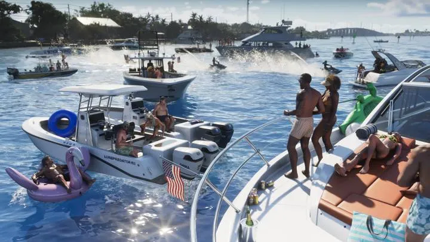
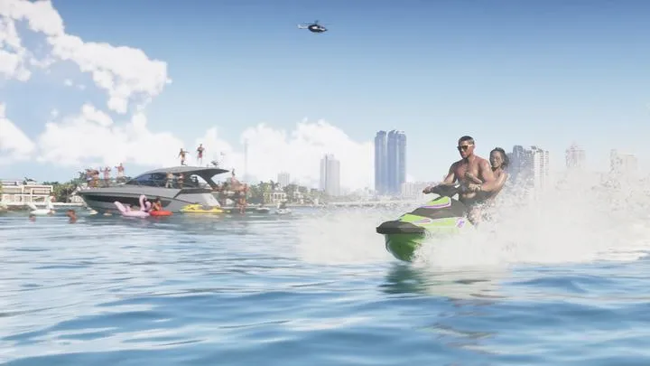
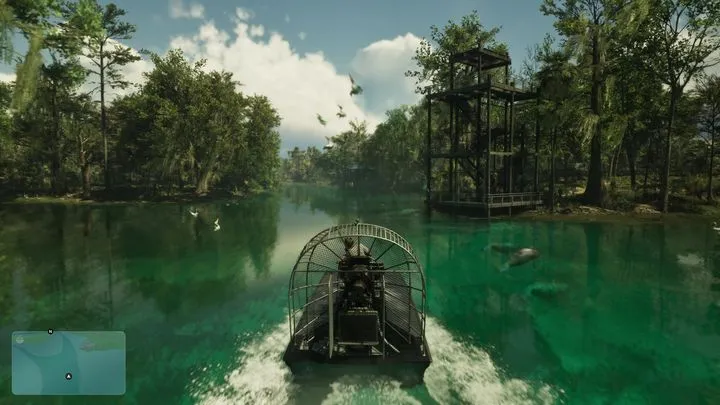
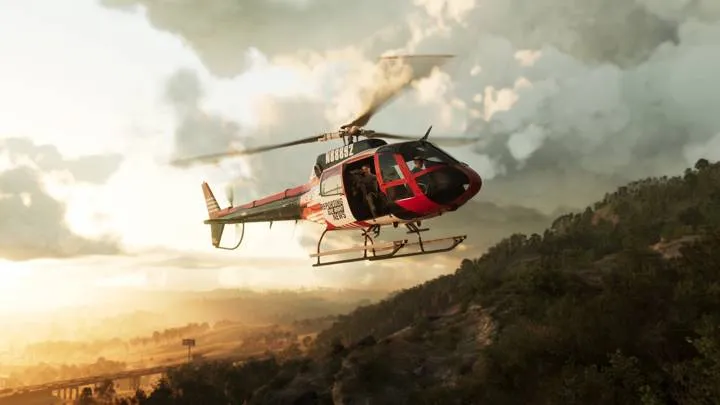
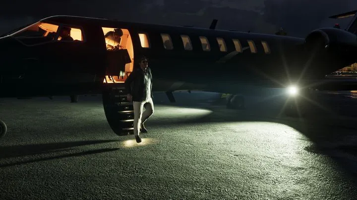

Полного списка моделей Rockstar не публиковала — каталог вырастет после 19 ноября. Здесь — весь транспорт, который уже виден в трейлерах, «Расширенном показе» и на официальных скриншотах. Марку пишем, только если она видна в кадре.
20 в разделе: Машины · Мотоциклы · Лодки и вода · Авиация · Общественный транспорт. Нажмите на карточку — откроется страница с кадрами, таймкодами и подробностями.
Машины 7

Джейсон садится в красный кабриолет со сложенной мягкой крышей и с 08:02 по 08:56 катается на нём по Вайс-Сити.…

Серый пикап у дома Брайана Хедера. На капоте — надпись «Caracara», марка — Vapid: в серии GTA так называется…

Уличная автосходка в Вайс-Сити: розовое купе и зелёный седан на огромных хромированных дисках, вокруг толпа. Машины на…

На этом седане на парковке в Амброзии Rockstar показала новый угон: над машиной подсказки «Slim Jim» — вскрыть замок…

После налёта герои меняют машину: ту, на которой приехали, сжигают на парковке, а уходят на неприметном бордовом…

В перестрелке на героев мчится тяжёлый полицейский внедорожник с кенгурятником и мигалкой, следом — другие машины…

Кольцевая гонка на 16 машин: спорткары с номерами и наклейками на трассе из бетонных блоков.
Мотоциклы 2

Двое с рюкзаками мчатся на спортивном мотоцикле по улице Вайс-Сити — эпизод идёт сразу после ограбления ювелирного…

Байкеры на кроссовых мотоциклах и квадроциклах едут по улице на заднем колесе. В «Расширенном показе» есть и…
Лодки и вода 6

Катера проносятся по бирюзовой воде мимо сухогруза под портальными кранами порта Вайс-Сити.

Рыболовный катер с центральной консолью и двумя подвесными моторами Dinka 350. Dinka — вымышленная марка серии GTA.

Вечеринка на воде в Leonida Keys: катера, яхта, надувной фламинго и американский флаг на корме.

Двое на гидроцикле несутся по заливу мимо яхт и высоток.

Плоскодонка с большим воздушным винтом позади — так ходят по болотам Grassrivers.

Каяк у набережной среди яхт и высоток. На официальном скриншоте Mount Kalaga каяк плывёт по реке под железнодорожным…
Авиация 4

Белый гидросамолёт на поплавках над островами и мостом Leonida Keys.

Бело-красный вертолёт над холмами Mount Kalaga.

Лаунж частного терминала аэропорта и бизнес-джет: героиня спускается по трапу ночью.

Над пляжем летит самолёт с баннером «NINE1NINE — Why sixtynine when you can nine 1 nine».
Общественный транспорт 1
По данным превью, по Леониде можно ездить на такси, автобусах и поезде. Кадров с ними Rockstar пока не показывала.
Кадры: Rockstar Games (трейлеры 1–3, «Расширенный показ», официальные скриншоты). Источник у каждой карточки указан над названием. Обновлено: 24 октября 2026.
Каждый день — одно сравнение: кадр игры рядом с реальным фото. Подписывайтесь:
YouTubeInstagramTikTokДругие разделы справочника: Персонажи · Бренды и заведения · Занятия · Механики · Животные · Регионы · Об игре